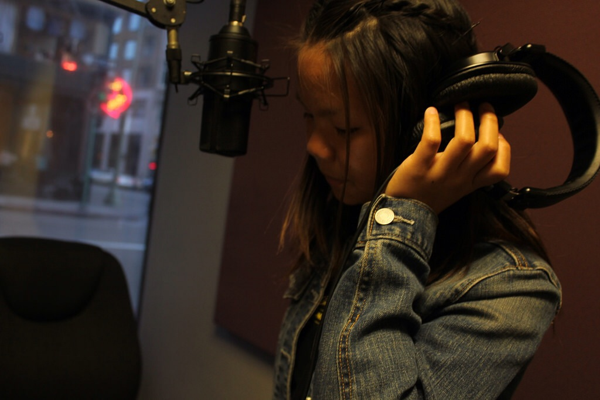

Follett Corporation
Laney College
Follett Corporation Career Oportunities
~August 13, 2019 - September 20, 2019~
Follett Corporation's WebsiteFollett Corporation is a company that help colleges and universities get their textbooks. I worked as a Seasonal Retail Team Member during the summer of 2019 at the Laney College book store.

- Assisted the manager on in-store transit invoices as well as special book orders from book manufacturers.
- Contributed to reaching the store’s daily sales goal and increasing profits by displaying proper employee etiquettes.
- Promoted opportunities such as EOPS for customers to make more cost-effective purchases in store.
Contributions:

Youth Radio
Oakland, CA
Youth Radio Media
~September 2015 - January 2016
Youth Radio's WebsiteYouth Radio Media is a place where young artist and authors/journalists can voice their opinions about current events and news. Youth Radio has created many multimedia content for this generation by this generation.
- Enhanced photographs by adjusting the ISO, shutter speed and aperture to balance out lighting and focus points.
- Executed different type of shots such as wide shots, close up shots and off the shoulder shots to convey perspective.
- Recorded interviews and podcast that were featured on the Youth Radio website and YouTube channel.